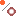
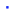
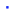
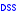

Guide content
- Deep Sky Objects
Deep Sky
Stars
You can switch on/off the display of stars with the Chart → Show Objects → Show stars dialog box or the  icon in the object bar.
icon in the object bar.
You can modify the star appearance by the Setup → Display Mode dialog box or the  icon in the object bar (this modifies also the appearance of deep sky objects ).
{kind=link}
Advanced ⇒ You can find more options in the Display Colour tab of Setup → Display dialog box.
You can increase the amount of stars to be shown by the  icon, clicking it adds 0.5 to the maximum magnitude limit. To decrease the number of displayed stars, click the  icon to decrease the maximum magnitude limit by 0.5. These icons are positioned in main bar.
icon, clicking it adds 0.5 to the maximum magnitude limit. To decrease the number of displayed stars, click the  icon to decrease the maximum magnitude limit by 0.5. These icons are positioned in main bar.
{kind=link}
Advanced ⇒ You can set the maximum magnitude limit for stars by the FOV ranges in Setup → Chart, coordinates → Object Filter.
You can show the proper motion of stars by Setup → Lines.
Deep Sky Objects
You can switch on/off the display of deep sky objects with the Chart → Show Objects → Show Deep Sky Objects dialog or the  icon in the object bar.
icon in the object bar.
Nebulae outlines (such as M42 in Orion) can be display with the Chart → Show Objects → Show Lines dialog box or the icon in the object bar.
{kind=link}
The appearance of feep sky objects can be modified by the Setup → Display Mode dialog box or the icon in the object bar (this modifies also the appearance of the stars.)
Advanced ⇒ You can find more options in the Display Colour, Deep sky object Colour tabs of Setup → Display menu.
You can increase the amount of deep sky objects to be displayed by the  icon, clicking it adds 0.5 to maximum magnitude limit. Clicking the
icon, clicking it adds 0.5 to maximum magnitude limit. Clicking the  icon decreases the maximum magnitude limit by 0.5. These icons are positioned in the main bar.
icon decreases the maximum magnitude limit by 0.5. These icons are positioned in the main bar.
Advanced ⇒ You can select the display of deep sky objects by maximum magnitude limit and maximum size in arcminutes by FOV ranges in Setup → Chart, coordinates → Object Filter.
Catalogs
The standard Cartes du Ciel-SkyChart installation comes with:
- Bright Stars Catalog which contains 9096 stars to a maximum magnitude of 6.5 (461 k).
- SAC which contains 10,600 deep sky objects (2.6 MB)
Advanced ⇒ Many other catalogs can be dowloaded from SourceForge //Cartes du Ciel-SkyChart// Catalog Download Page. Some of the supplementary catalogs overlap or objects can't be drawed with a large FOV, so you can choose catalogs to activate according to your needs in Setup → Catalog menu (CdC Stars and CdC Deep Sky tabs).
For details about downloading extra catalogs, see Installation of extra catalogs.
For configuration of extra catalogs in Cartes du Ciel-SkyChart, see Catalog
Pictures
To obtain a more realistic appearance of deep sky objects rather than symbols, you have to download from SourceForge //Cartes du Ciel-SkyChart// Site an exerpt of RealSky pictures corresponding to the SAC catalog content and install it. This is not bundled with Cartes du Ciel-SkyChart, because of it size (234 MB).
Then, you have to build the pictures database with Setup → Pictures → Object tab (scan directory).
Many of the pictures are sized around 1°x1°, so they are only visible with a FOV below 30°. You can switch the display of pictures between on or off by the Chart → Show Objects → Show pictures dialog box or the  icon on the object bar.
icon on the object bar.
DSS/RealSky
For any particular deep sky object, you can download a picture from the DSS Site by the  icon in the object bar.
It is temporary stored in Your_profile\documents\Cartes du Ciel\pictures\$temp.fit as defined in the Setup → Pictures DSS/RealSky tab (temporary file).
You can choose to display these pictures by the  icon in the object bar.
icon in the object bar.
{kind=link}
Advanced ⇒ You can set more options in the Setup → Pictures → DSS RealSky dialog box.